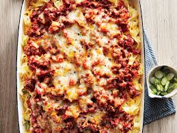

Ingredient
Procedure
1. Preheat the oven to 425 F. Oil a 2-quart baking dish.
2. Bring a large pot of salted water to a boil. Add the noodles and cook to al dente according to the package directions. Drain and put in the prepared baking dish. Toss with the sour cream, Parmesan and 1/4 teaspoon salt..
3. Meanwhile, heat the olive oil in a large skillet over medium-high heat. Add the ground beef and cook, stirring, until no longer pink, about 4 minutes. Add the bell peppers and scallions and cook until crisp-tender, about 3 minutes.
4. Make a space in the pan, add the tomato paste and toast for a minute. Sprinkle with the Italian seasoning and 1/4 teaspoon salt. Add the diced tomatoes, stir and bring to a simmer. Cook until slightly thickened, about 2 minutes.
5. Pour the beef mixture over the noodles and sprinkle with the grated Cheddar. Bake on the middle rack until the cheese is melted and the edges are bubbling, 15 to 20 minutes. Let stand for 10 minutes before serving.